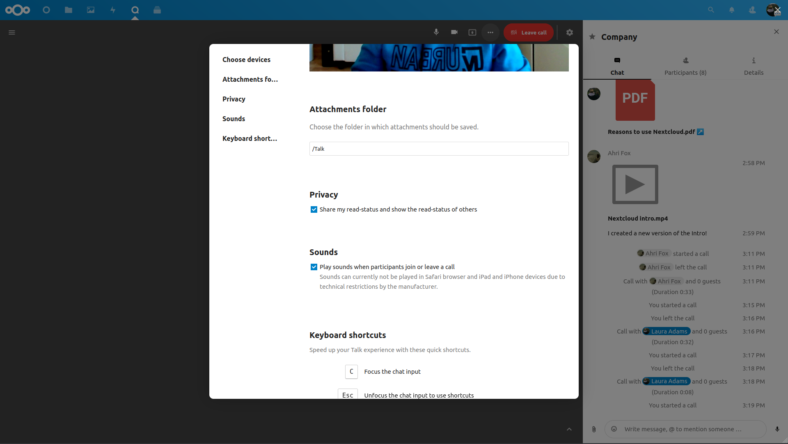
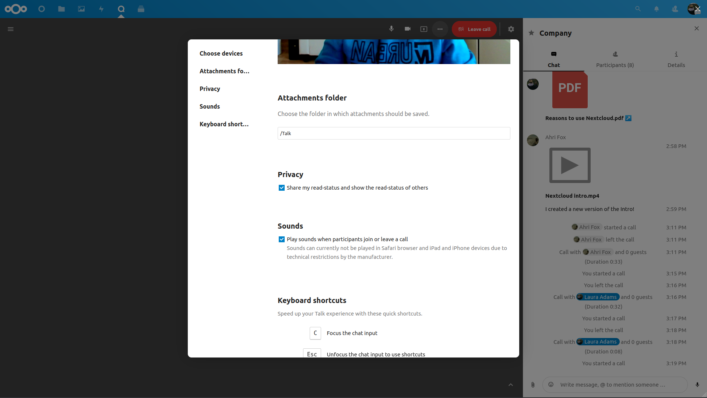

Загальні поняття Nextcloud Talk
Nextcloud Talk дозволяє вам створювати чати та відео дзвінки на вашому особистому сервері.
Чати та дзвінки створюються у розмовах. Ви можете створит будь яку кількість розмов. Існує два види розмов:
Віч-на-віч розмови Це коли у Вас є приватний чат або дзвінок з іншим користувачем Talk. Ви не можете додати інших людей до цієї розмови або поділитися нею за допомогою посилання. Ви можете розпочати віч-на-віч чат знайшовши іншого користувача в панелі пошука та клікнувши на його ім’я.
Групова розмова. Окрім персони, що створила цю розмову, групова розмова може мати будь-яку кількість людей. Групова розмова може бути публічно поширена за допомогою посилання, таким чином сторонні гості можуть приєднатися до дзвінка. Вона теж может бути відображена у списку і інші люди на вашому Nextcloud сервері зможуть приєднатися до спілкування.
Створити чат
Ви можете створити віч-на-віч чат знайшовши ім’я користувача, групи або кола та клікнувши на ньому. Для окремого користувача розмова створиться миттєво і ви можете починати чат. Для групу або кола вам потрібно буде обрати ім’я та налаштування перед тим як створите розмову так додасте учасників.

Якщо Ви бажаєте створити спеціальну групову розмову - натисніть кнопку плюс поруч з полем пошуку. Тоді Ви зможете обрати назву для розмови та обрати чи буде ця розмова відкрита для сторонніх користувачів та чи зможуть інші користувачі серверу бачити її та мати змогу приєднатися.

На наступному кроці Ви зможете додати учасників та завершити створення розмови.

Ви можете відмінити створення розмови натиснувши будь-де зовні області білого меню у будь-який час.

Поділитися файлами у чаті
Ви можете поділитися файлами у чаті в один з 3х способів.
По-перше, ви можете просто перетягнути їх на чат.

По-друге, Ви можете обрати файл з Ваших Nextcloud Files або файлового менеджеру обравши маленьку скрепку та вибравши звідки Ви хочете додати файл.


Ви можете додавати ще файли допоки ви закінчили та вирішили поділитися файлами.

Усі користувачі будуть у змозі натиснути на файл щоб продивитися його, редагувати або скачати, незалежно від того, чи мають вони обліковий запис. Користувачі з обліковим записом будуть мати змогу автоматично отримати файли якими з ними поділилися, тоді як незареєстровані гості отримають файли як посилання.

Додавання emoji
Ви можете додавати emoji використовоючи селектор зліва від поля вводу.

Відповідь на повідомлення та інше
Ви может відповісти на повідомлення використовуючи стрілку, яка з’являється при наведенні курсору на повідомлення.

В меню … Ви також зможете вибрати відповісти приватно. Це відкрие віч-на-віч розмову.
Тут ви також можете створити пряме посилання на повідомлення або відмітити його як не прочитане таким чином чати буде прокручений назад на нього під час наступного входу. Якщо це файл - Ви можете переглянути його в Files/
Керування розмовою
You are always moderator in your new conversation. In the participant list you can promote other participants to moderators using the ... menu to the right of their user name, assign them custom permissions or remove them from the conversation.
Moderators can configure the conversation. Select Conversation settings from the gear menu of the conversation on the top to access the settings.

Here you can configure the description, guest access, if the conversation is visible to others on the server and more.

Початок дзвінка
Під час Вашого знаходження у розмові Ви у будь-який час можете розпочати дзвінок натиснувши кнопку Start call. Інші учасники отримають сповіщення та зможуть приєднатися до дзвінка. Якщо хтось інший вже розпочав дзвінок кнопка зміниться на зелену Join call.

During a call, you can mute your microphone and disable your video with the buttons on the right side of the top bar, or using the shortcuts M to mute audio and V to disable video. You can also use the space bar to toggle mute. When you are muted, pressing space will unmute you so you can speak until you let go of the space bar. If you are unmuted, pressing space will mute you until you let go.
Ви можете вимкнути Ваше відео (корисно під час показу екрану) за допомогою маленької стрілки якраз над відео потоком. Щоб повернути його назад - натисніть стрілку ще раз.
You can access your settings and choose a different webcam, microphone and other settings in the ... menu in the top bar.
 

Зміна вигляду під час дзвінку
Ви можете зміните вигляд під час дзвінку на promoted-view або сітку за допомогою значку з чотирма блоками зверху праворуч. Сітка буде показувати усіх учасників однакового розміру та якщо люди не вміщуються в екран - будуть показані кнопки, що дозволять навігацію.

Promoted-view буде покаувати людину, що зараз говорить, великого розміру а інших - у рядок нижче. Якщо люди не вміщуються в екран - з’являться кнопки, що дозволять навігацію.